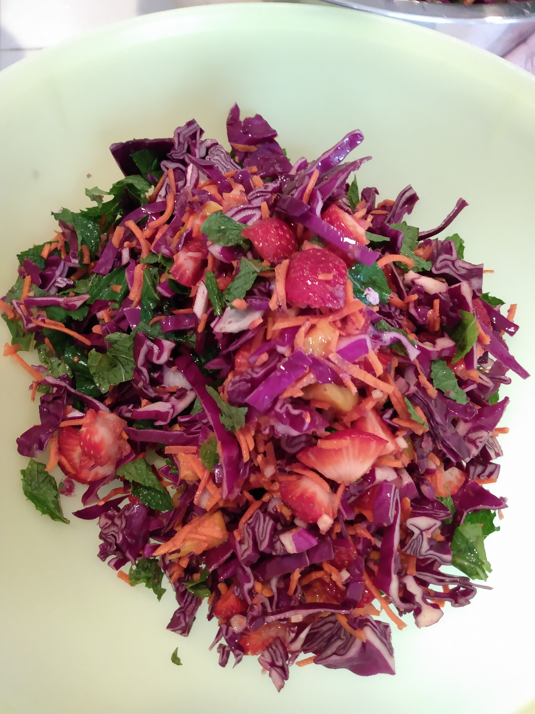
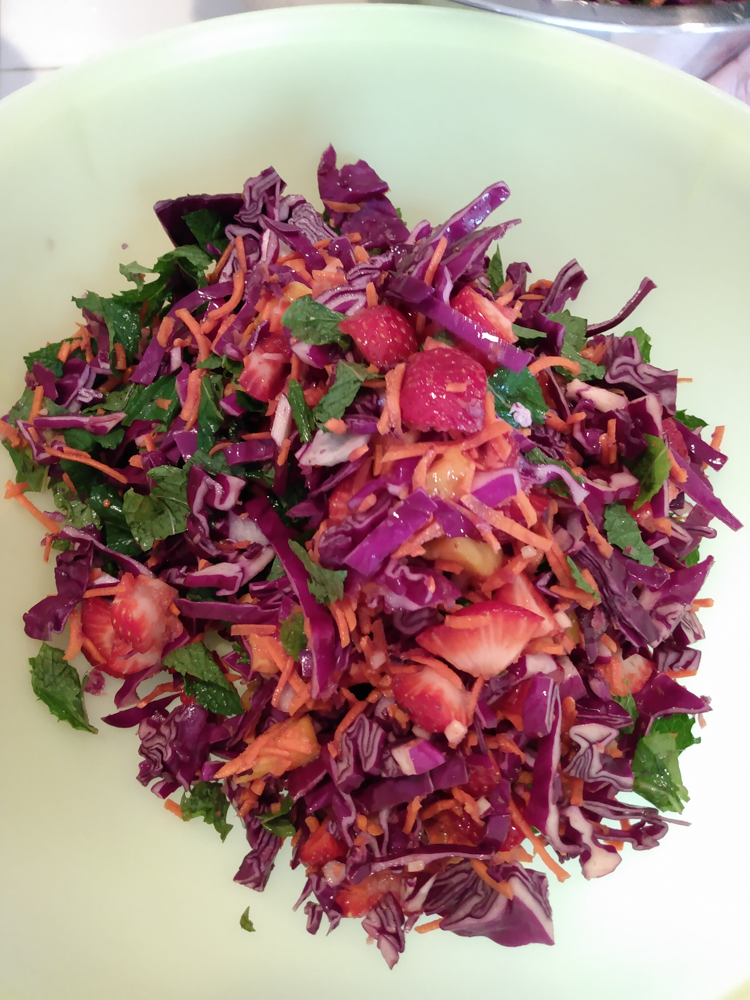

Purple cabbage and fruit salad
Source: based on https://therastamamaskitchen.com/wp/catering-menu/

Ingredients
- Purple cabbage
- Shredded (orange) carrots
- Mangoes
- Strawberries
- Fuyu persimmons
- Mint leaves
- Ginger
Source: based on https://therastamamaskitchen.com/wp/catering-menu/
